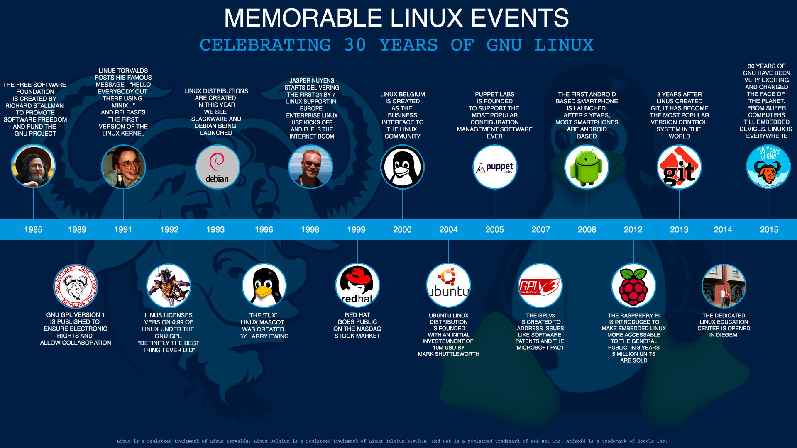

History of Linux
History of Linux
Linux began in 1991 as a personal project by Finnish student Linus Torvalds: to create a new free operating system kernel. The resulting Linux kernel has been marked by constant growth throughout its history. Since the initial release of its source code in 1991, it has grown from a small number of C files under a license prohibiting commercial distribution to the 4.15 version in 2018 with more than 23.3 million lines of source code, not counting comments, under the GNU General Public License v2.
Events leading to Creation
After AT&T had dropped out of the Multics project, the Unix operating system was conceived and implemented by Ken Thompson and Dennis Ritchie (both of AT&T Bell Laboratories) in 1969 and first released in 1970. Later they rewrote it in a new programming language, C, to make it portable. The availability and portability of Unix caused it to be widely adopted, copied and modified by academic institutions and businesses.
In 1977, the Berkeley Software Distribution (BSD) was developed by the Computer Systems Research Group (CSRG) from UC Berkeley, based on the 6th edition of Unix from AT&T. Since BSD contained Unix code that AT&T owned, AT&T filed a lawsuit (USL v. BSDi) in the early 1990s against the University of California. This strongly limited the development and adoption of BSD.
In 1983, Richard Stallman started the GNU project with the goal of creating a free UNIX-like operating system. As part of this work, he wrote the GNU General Public License (GPL). By the early 1990s, there was almost enough available software to create a full operating system. However, the GNU kernel, called Hurd, failed to attract enough development effort, leaving GNU incomplete.
n 1985, Intel released the 80386, the first x86 microprocessor with a 32-bit instruction set and a memory management unit with paging. In 1986, Maurice J. Bach, of AT&T Bell Labs, published The Design of the UNIX Operating System. This definitive description principally covered the System V Release 2 kernel, with some new features from Release 3 and BSD.
In 1987, MINIX, a Unix-like system intended for academic use, was released by Andrew S. Tanenbaum to exemplify the principles conveyed in his textbook, Operating Systems: Design and Implementation. While source code for the system was available, modification and redistribution were restricted. In addition, MINIX's 16-bit design was not well adapted to the 32-bit features of the increasingly cheap and popular Intel 386 architecture for personal computers. In the early nineties a commercial UNIX operating system for Intel 386 PCs was too expensive for private users.
These factors and the lack of a widely adopted, free kernel provided the impetus for Torvalds' starting his project. He has stated that if either the GNU Hurd or 386BSD kernels had been available at the time, he likely would not have written his own.
The Creation of Linux
In 1991, while studying computer science at University of Helsinki, Linus Torvalds began a project that later became the Linux kernel. He wrote the program specifically for the hardware he was using and independent of an operating system because he wanted to use the functions of his new PC with an 80386 processor. Development was done on MINIX using the GNU C Compiler. The GNU C Compiler is still the main choice for compiling Linux today, but can be built with other compilers, such as the Intel C Compiler.
As Torvalds wrote in his book Just for Fun, he eventually ended up writing an operating system kernel. On 25 August 1991, he (at age 21) announced this system in a Usenet posting to the newsgroup "comp.os.minix.":
|
Hello everybody out there using minix - |
Naming
Torvalds first published the Linux kernel under its own licence, which had a restriction on commercial activity.The software to use with the kernel was software developed as part of the GNU project licensed under the GNU General Public License, a free software license. The first release of the Linux kernel, Linux 0.01, included a binary of GNU's Bash shell.
In the "Notes for linux release 0.01", Torvalds lists the GNU software that is required to run Linux: Sadly, a kernel by itself gets you nowhere. To get a working system you need a shell, compilers, a library etc. These are separate parts and may be under a stricter (or even looser) copyright. Most of the tools used with linux are GNU software and are under the GNU copyleft. These tools aren't in the distribution - ask me (or GNU) for more info.
In 1992, he suggested releasing the kernel under the GNU General Public License. He first announced this decision in the release notes of version 0.12. In the middle of December 1992 he published version 0.99 using the GNU GPL. Linux and GNU developers worked to integrate GNU components with Linux to make a fully functional and free operating system. Torvalds has stated, "making Linux GPLed was definitely the best thing I ever did."
Around 2000 Torvalds clarified that the used license for the Linux kernel is exactly the GPLv2, without the common "or later clause".In 2007, after years of draft discussions, the GPLv3 was released and Torvalds and the majority of kernel developers decided against adopting the new license for the linux kernel.
Torvalds announced in 1996 that there would be a mascot for Linux, a penguin. This was because when they were about to select the mascot, Torvalds mentioned he was bitten by a little penguin (Eudyptula minor) on a visit to the National Zoo & Aquarium in Canberra, Australia. Larry Ewing provided the original draft of today's well known mascot based on this description. The name Tux was suggested by James Hughes as derivative of Torvalds' UniX, along with being short for tuxedo, a type of suit with color similar to that of a penguin.
New Development
♎ Linux Community
The largest part of the work on Linux is performed by the community: the thousands of programmers around the world that use Linux and send their suggested improvements to the maintainers. Various companies have also helped not only with the development of the kernels, but also with the writing of the body of auxiliary software, which is distributed with Linux. As of February 2015, over 80% of Linux kernel developers are paid.It is released both by organized projects such as Debian, and by projects connected directly with companies such as Fedora and openSUSE. The members of the respective projects meet at various conferences and fairs, in order to exchange ideas. One of the largest of these fairs is the LinuxTag in Germany, where about 10,000 people assemble annually, in order to discuss Linux and the projects associated with it.
♎ Open Source Development Lab and Linux Foundation
The Open Source Development Lab (OSDL) was created in the year 2000, and is an independent nonprofit organization which pursues the goal of optimizing Linux for employment in data centers and in the carrier range. It served as sponsored working premises for Linus Torvalds and also for Andrew Morton (until the middle of 2006 when Morton transferred to Google). Torvalds worked full-time on behalf of OSDL, developing the Linux kernels.On 22 January 2007, OSDL and the Free Standards Group merged to form The Linux Foundation, narrowing their respective focuses to that of promoting Linux in competition with Microsoft Windows.As of 2015, Torvalds remains with the Linux Foundation as a Fellow.
♎ Companies
Despite being freely available, companies profit from Linux. These companies, many of which are also members of the Linux Foundation, invest substantial resources into the advancement and development of Linux, in order to make it suited for various application areas. This includes hardware donations for driver developers, cash donations for people who develop Linux software, and the employment of Linux programmers at the company. Some examples are Dell, IBM and Hewlett-Packard, which validate, use and sell Linux on their own servers, and Red Hat and SUSE, which maintain their own enterprise distributions. Likewise, Digia supports Linux by the development and LGPL licensing of Qt, which makes the development of KDE possible, and by employing some of the X and KDE developers.
♎ Desktop environments
KDE was the first advanced desktop environment (version 1.0 released in July 1998), but it was controversial due to the then-proprietary Qt toolkit used. GNOME was developed as an alternative due to licensing questions. The two use a different underlying toolkit and thus involve different programming, and are sponsored by two different groups, German nonprofit KDE e.V. and the United States nonprofit GNOME Foundation.
As of April 2007, one journalist estimated that KDE had 65% of market share versus 26% for GNOME. In January 2008, KDE 4 was released prematurely with bugs, driving some users to GNOME. GNOME 3, released in April 2011, was called an "unholy mess" by Linus Torvalds due to its controversial design changes.
|
🌐 "Linux is obsolete" In 1992, Andrew S. Tanenbaum, recognized computer scientist and author of the Minix microkernel system, wrote a Usenet article on the newsgroup comp.os.minix with the title "Linux is obsolete", which marked the beginning of a famous debate about the structure of the then-recent Linux kernel. Among the most significant criticisms were that: ♜ The kernel was monolithic and thus old-fashioned. ♜ The lack of portability, due to the use of exclusive features of the Intel 386 processor. "Writing a new operating system that is closely tied to any particular piece of hardware, especially a weird one like the Intel line, is basically wrong." ♜ There was no strict control of the source code by any individual person. ♜ Linux employed a set of features which were useless (Tanenbaum believed that multithreaded file systems were simply a "performance hack"). This is preety much evident from the above facts that "Linux is obsolete". |